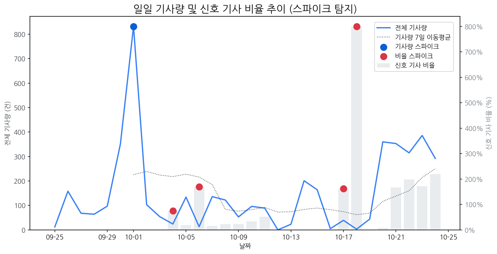

| 날짜 | 기사량 | Z-Score |
|---|---|---|
| 2025-10-01 | 832건 | 2.1 |
| 날짜 | 비율 | Z-Score |
|---|---|---|
| 2025-10-04 | 75.00% | 2.27 |
| 2025-10-06 | 169.23% | 2.05 |
| 2025-10-17 | 161.54% | 2.15 |
| 2025-10-18 | 800.00% | 2.22 |
| 급등 신호 | 오늘 언급량 | 어제 대비 증가 | 모멘텀(z_like) |
|---|---|---|---|
| sk온 | 9 | 9 | 3.62 |
| 애플 | 24 | 9 | 3.42 |
| 고성능 | 5 | 5 | 2.32 |
| 아이패드 | 7 | 2 | 1.62 |
| 모멘텀 토픽 | z_like 점수 | 누적 언급량 |
|---|---|---|
| sk온 | 3.62 | 10 |
| 애플 | 3.42 | 150 |
| 고성능 | 2.32 | 15 |
| 아이패드 | 1.62 | 25 |
| oled | 1.17 | 189 |
| 날짜 | 유형 | 제목 |
|---|---|---|
| 2025-10-15 | LAUNCH | 인하대, 이정환 교수 연구실 소속 학생들 국제학술대회서 성과 인정받아 |
| 2025-10-24 | INVEST,LAUNCH | [이승훈 특파원의 일본열도 통신] TV 대신 콘텐츠 기업으로… 가전 상징... |
| 2025-10-20 | INVEST,ORDER | 中 모니터 시장도 '양보다 질'…SDC·LGD 수혜 기대 |
| 2025-10-20 | LAUNCH | 인하대학교 이정환 교수 연구실 소속 학생들, 국제학술대회서 성과 인정 |
| 2025-10-24 | INVEST,LAUNCH,ORDER | [더벨][삼성 인사 풍향계]이청 사장 취임 1년, 'IT OLED ' 조기 안정화 미... |